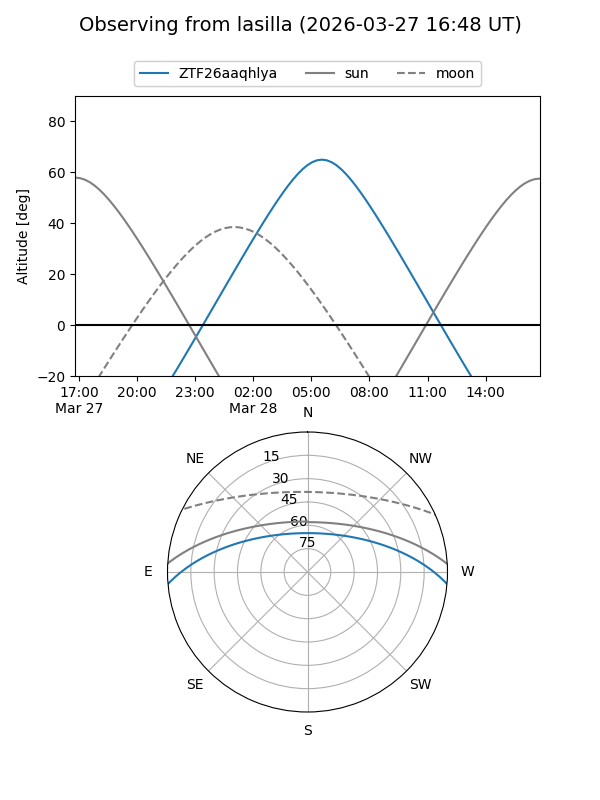
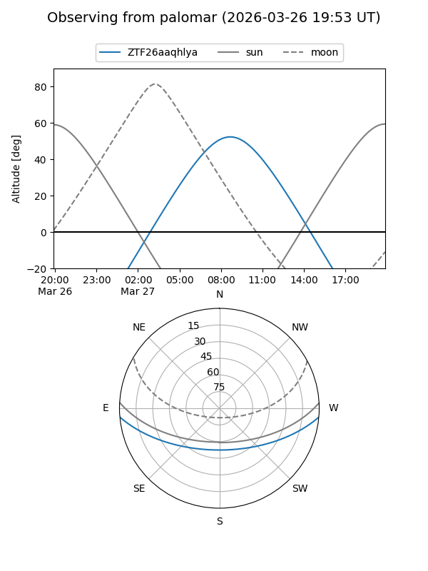

ZTF26aaqhlya
Target ZTF26aaqhlya at 2026-03-27 10:18
Aliases and brokers:
FINK: link
Lasair: link
ALeRCE: link
alt names
ZTF26aaqhlya (ztf,fink_ztf)
Coordinates:
equatorial (ra, dec) = 197.7196,-4.11216
equatorial (HMS+DMS) = 13:10:52.71,-04:06:43.79
galactic (l, b) = (312.2152,+58.40874)
Flags:
Photometry:
last ztfg=17.87
1 ztfg detections
Lightcurve
Visibility


Additional plots